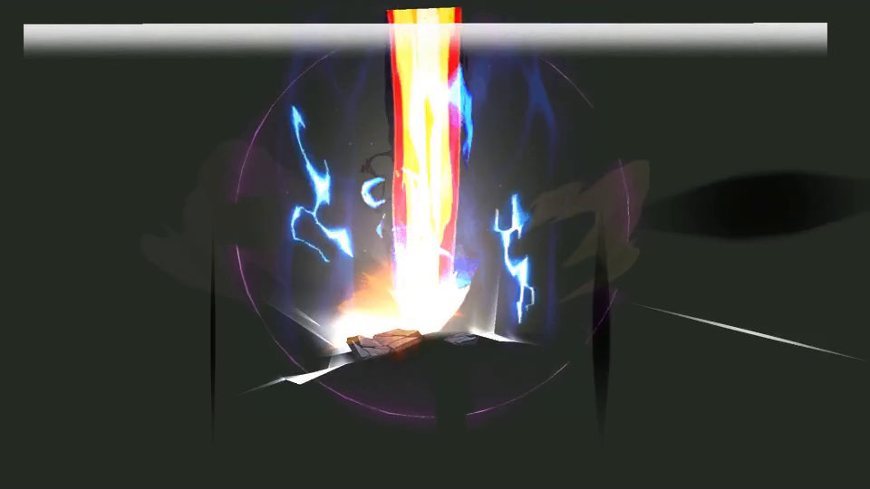
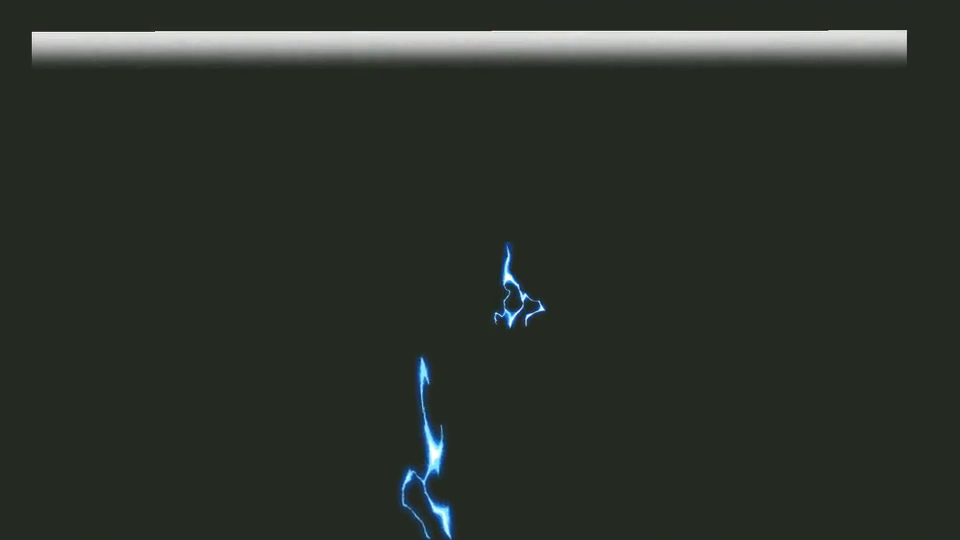
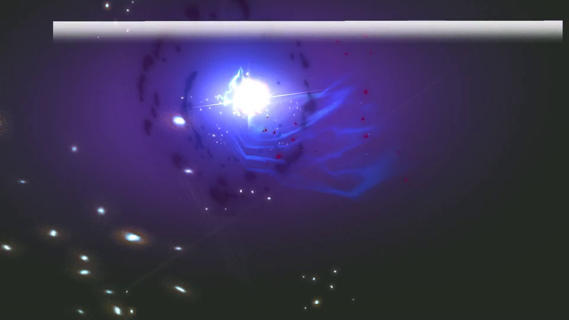

B02 / 047 · 375帧完整原序列
17 / 375 · 0.57s48 / 375 · 1.60s
79 / 375 · 2.63s
110 / 375 · 3.67s141 / 375 · 4.70s
172 / 375 · 5.73s204 / 375 · 6.80s235 / 375 · 7.83s266 / 375 · 8.87s297 / 375 · 9.90s328 / 375 · 10.93s359 / 375 · 11.97s